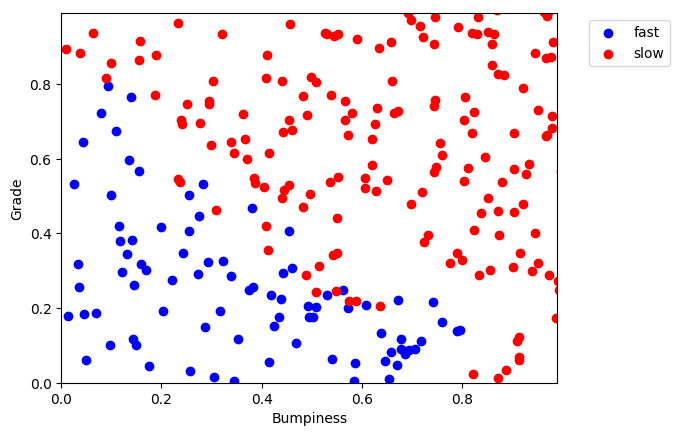

Decision Trees
Decision trees for self-driving car
-
Depending on the bumpiness and steepness of a terrain, the car must decide to go faster or slower. We first need to create a dataset of terrain with the features bumpiness and steepness along with a label "fast" or "slow". From this labeled dataset, we will be able to build a decision tree to help the car make it's decision : "Should I go slow or fast?"
import random def makeTerrainData(n_points): random.seed(42) ### generate random data for both features 'grade' and 'bumpy' with an error grade = [random.random() for ii in range(0,n_points)] bumpy = [random.random() for ii in range(0,n_points)] error = [random.random() for ii in range(0,n_points)] ### data are labeled depending on their features and error. ### label "slow" if labels = 1.0 ### label "fast" if labels = 0.0 labels = [round(grade[ii]*bumpy[ii]+0.3+0.1*error[ii]) for ii in range(0,n_points)] ### adjust labels for extreme cases (>0.8) of bumpiness or steepness for ii in range(0, len(y)): if grade[ii]>0.8 or bumpy[ii]>0.8: labels[ii] = 1.0 ### split into train set (75% of data generated) and test sets (25% of data generated) features = [[gg, ss] for gg, ss in zip(grade, bumpy)] split = int(0.75*n_points) features_train = features[0:split] features_test = features[split:] labels_train = labels[0:split] labels_test = labels[split:] return features_train, labels_train, features_test, labels_testFor n_points = 1000, we get the following repartition of test points. We consider the feature 'bumpiness' on the x-axis and 'grade' on the y axis. Each feature in a gradient between 0 and 1. Each point previously generated has two coordinates bumpiness and grade. When we plot the test points (features_test) - representing 25% of our generated data - we can see the pattern separating the points labeled 'slow' and 'fast'.
 -
Now with our training set (features_train), we can train our classifier to predict a point's label depending on its features.
from prep_terrain_data import makeTerrainData from sklearn import tree ### generate the dataset for 1000 points (see previous code) features_train, labels_train, features_test, labels_test = makeTerrainData(1000) ### function for classifier def classify(features_train, labels_train, min_samples_split): clf = tree.DecisionTreeClassifier(min_samples_split=min_samples_split) fitting = clf.fit(features_train, labels_train) return fitting clf = classify(features_train, labels_train, min_samples_split) pred = clf.predict(features_test)
Decision tree with min_samples_split = 2

Decision tree with min_samples_split = 50
min_samples_split Training time (sec) Predict time (sec) Accuracy 2 0.001 0.000 0.908 50 0.001 0.000 0.912 We can see that a low min_samples_split doesn't necessarily means lead to a better accuracy. Indeed, we need to ne careful of overfitting the traning set leading to a loss in accuracy when analyzing a testing set. However for both example, the prediction accuracy is nonetheless very good.